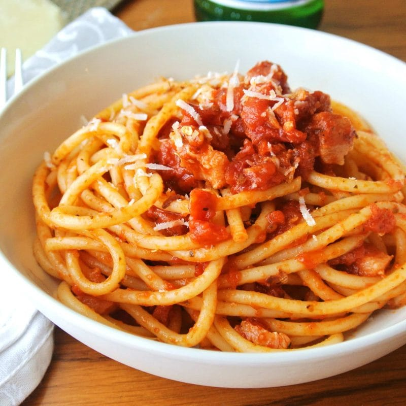

BUCATINI AMATRICIANA

Description
Bucatini all'amatriciana is a traditional Italian pasta sauce based on guanciale (cured pork cheek), pecorino romano cheese, tomato, and, in some variations, onion.
Originating from the town of Amatrice (in the mountainous Province of Rieti of Lazio region), the Amatriciana is one of the best known pasta sauces in present-day Roman and Italian cuisine. The Italian government has named it a traditional agro-alimentary product of Lazio and Amatriciana tradizionale is registered as a Traditional Speciality Guaranteed in the EU and the UK.
Ingredients
- Bucatini 0.7 lb (320 g)
- Peeled tomatoes 0.9 lb (400 g)
- Guanciale 5 oz (150 g)
- Pecorino Romano cheese ¾ cup (75 g) - for grating
- Fine salt to taste
- Extra virgin olive oil to taste
- Fresh chili pepper 1
- White wine ¼ cup (50 g)
Steps
- Boil the water to cook the pasta in, then add salt
- Take the guanciale, remove the pork rind and cut it into slices about 1/4-inch (1 cm) thick, then into strips about 1/8-inch (1/2 cm) wide
- Heat a drizzle of oil in a pan, add the whole chili pepper and the guanciale cut into strips
- Brown over low heat for 7-8 minutes until the fat has melted and the meat is crunchy; stir often to prevent it from burning
- Once the fat has melted, pour in the white wine, turn up the heat and let it evaporate
- Transfer the guanciale to a plate and set aside
- Pour the peeled tomatoes into the same pan, breaking them up with your hands directly into the cooking liquid, continue cooking the sauce for about 10 minutes
- As soon as the water boils, pour in the spaghetti and cook them al dente
- Add salt to taste, remove the chili pepper from the sauce, add the guanciale strips to the pan and stir to mix
- Once the spaghetti are cooked, drain them and add them directly to the sauce in the pan
- To finish, sprinkle with grated pecorino cheese
HOME